windows event logs
Windows Event Logs
The Windows Event Logs are not text files that can be viewed using a text editor. However, the raw data can be translated into XML using the Windows API. The events stored in these log files are stored in a proprietary binary format with a .evt or .evtx extension. The log files with the .evtx file extension typically reside in C:\Windows\System32\winevt\Logs.
There are 3 main ways of accessing these event logs within a Windows system:
1. Event Viewer (GUI-based application)
2. Wevtutil.exe (command-line tool)
3. Get-WinEvent (PowerShell cmdlet)
Event Viewer
Open In Search "Event Viewer”
or
From CMD: eventvwr.msc
Event Viewer has 3 panes.
1. The pane on the left provides a hierarchical tree listing of the event log providers.
2. The pane in the middle will either display a general overview and summary or the events specific to a selected provider.
3. The pane on the right is the actions pane.
There are 5 types of events that can be logged.

On the left pane, the standard logs are visible under Windows Logs.
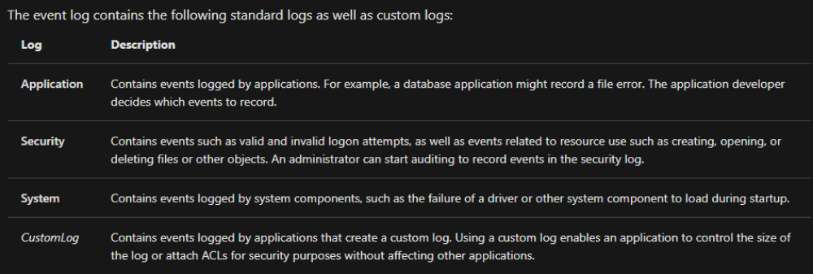
The next section is the Applications and Services Logs. Expand this section and drill down on Microsoft > Windows > PowerShell > Operational.
PowerShell will log operations from the engine, providers, and cmdlets to the Windows event log.
Right-click on Operational then Properties.
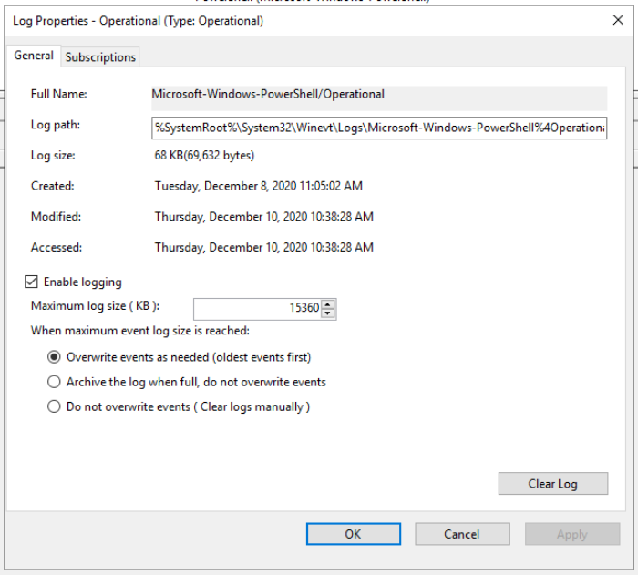
Within Properties, you see the log location, log size, and when it was created, modified, and last accessed. Within the Properties window, you can also see the maximum set log size and what action to take once the criteria are met. This concept is known as log rotation. These are discussions held with corporations of various sizes. How long to keep logs and when it's permissible to overwrite the logs with new data.
Lastly, notice the Clear Log button at the bottom right. There are legitimate reasons to use this button, but adversaries will likely attempt to clear the logs to go undetected. Note: This is not the only method to clear the event logs for any given event provider.
Note:
To view event logs from another computer, right-click Event Viewer (Local) > Connect to Another Computer...
Wevtutil.exe
You played around with Event Viewer. Imagine you have to sit there and manually sift through hundreds or even thousands of events (even after filtering the log). Not fun. It would be nice if you could write scripts to do this work for you. We will explore some tools that will allow you to query event logs via the command line and/or PowerShell.
The wevtutil.exe tool "enables you to retrieve information about event logs and publishers. You can also use this command to install and uninstall event manifests, to run queries, and to export, archive, and clear logs."
Command: wevtutil.exe /?
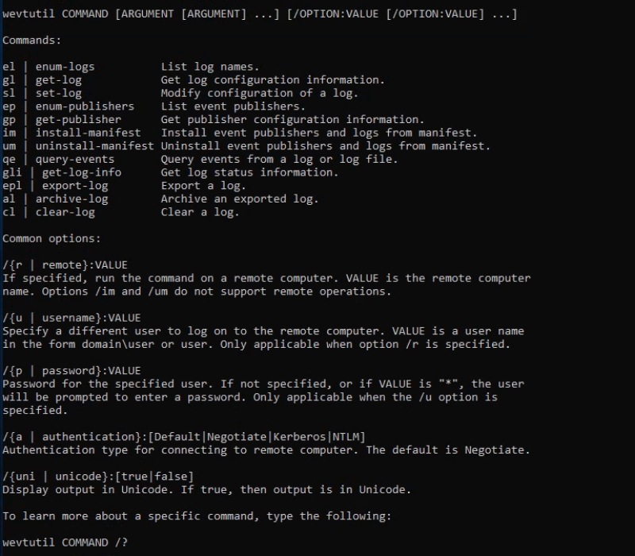
Get-WinEvent
The Get-WinEvent cmdlet gets events from event logs and event tracing log files on local and remote computers.
Note: The Get-WinEvent cmdlet replaces the Get-EventLog cmdlet.
Refernce: https://docs.microsoft.com/en-us/powershell/module/microsoft.powershell.diagnostics/Get-WinEvent?view=powershell-7.2&viewFallbackFrom=powershell-7.1
Generally speaking, you can filter event logs as:
Get-WinEvent -LogName Application | Where-Object { $_.ProviderName -Match 'WLMS' }
Note: When working with large event logs, per Microsoft, it's inefficient to send objects down the pipeline to a Where-Object command. The use of the Get-WinEvent cmdlet's FilterHashtable parameter is recommended to filter event logs.
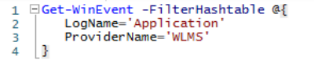
The syntax of a hash table is as follows:
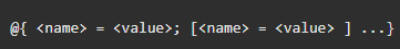
Guidelines for defining a hash table is as follows:
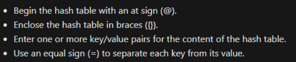
Note: You don't need to use a semicolon if you separate each key/value with a new line as in the screenshot above for the -FilterHashtable for ProviderName='WLMS'
Command:
Get-WinEvent -FilterHashtable @{LogName='Application'; ProviderName='wlms'}
or
Get-WinEvent -FilterHashtable @{
LogName='Application'
ProviderName='wlms'
}
Miscellaneous
XPath Queries
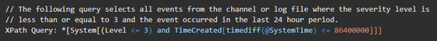
Note: XPath Queries can be used by both wevtutil.exe & Get-WinEvent cmdlet.
Let's create an XPath query for the same event from the previous section.
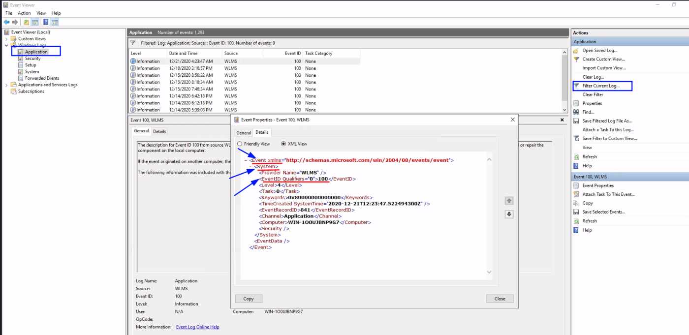
We will create the XPath query from the above.
I opned the Windows Event Viewer and Filtered Event ID of 100. (As per previous task)
Next, we click on Details and Open the XML View
The first tag is the starting point. This can either be an * or the word Event.
Command: Get-WinEvent -LogName Application -FilterXPath '*'
The next tag is System
Command: Get-WinEvent -LogName Application -FilterXPath '*/System/'
Note: Its best practice to explicitly use the keyword System but you can use an * instead as with the Event keyword. The query -FilterXPath '*/*' is still valid.
The next tag Event ID. The Event ID is 100. Let's plug that into the command.
Command: Get-WinEvent -LogName Application -FilterXPath '*/System/EventID=100'
Or
Command: Get-WinEvent -LogName Application -FilterXPath '*/System[EventID=100]'
Now, we can run it.
Get-WinEvent (Powershell)
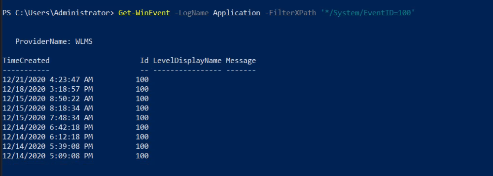
wevtutil.exe (CMD)
Command: wevtutil.exe qe Application /q:*/System/EventID=100 /f:text /c:1
Or
Command: wevtutil.exe qe Application /q:*/System[EventID=100] /f:text /c:1
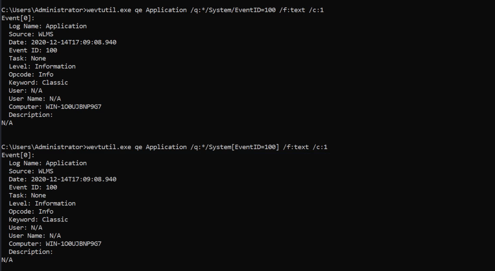
Another Example: (includes ProviderName)
Command: Get-WinEvent -LogName Application -FilterXPath '*/System/Provider[@Name="WLMS"]'
Combing XPath Queries:
Get-WinEvent -LogName Application -FilterXPath '*/System/EventID=101 and */System/Provider[@Name="WLMS"]'
Using Event Data in XPath Queries:
For the Following Event Viewer XML
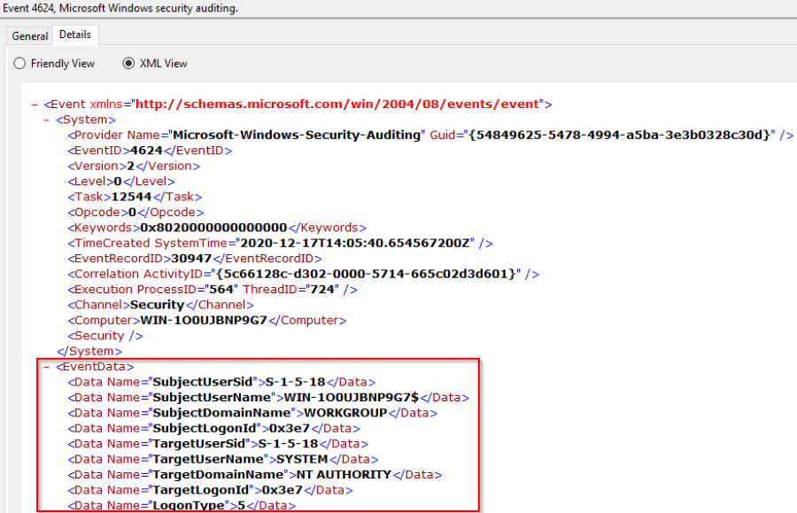
Command: Get-WinEvent -LogName Security -FilterXPath '*/EventData/Data[@Name="TargetUserName"]="System"' -MaxEvents 10
Note: -MaxEvents was used to limit to 10 events of output
Example: Room Question
Using Get-WinEvent and XPath, what is the query to find WLMS events with a System Time of 2020-12-15T01:09:08.940277500Z?
Command: Get-WinEvent -LogName Application -FilterXPath '*/System/Provider[@Name="WLMS"] and */System/TimeCreated[@SystemTime="2020-12-15T01:09:08.940277500Z"]'
Using Get-WinEvent and XPath, what is the query to find a user named Sam with an Logon Event ID of 4720?
Command: Get-WinEvent -LogName Security -FilterXPath '*/EventData/Data[@Name="TargetUserName"]="Sam" and */System/EventID=4720'
Demo(First Event Display For a Local FIle Using wevtutil.exe):
wevtutil.exe qe C:\Users\THM-Analyst\Desktop\Scenarios\Practice\Filtering.evtx /lf:true /c:1 /f:text /q:*/System/EventID=3
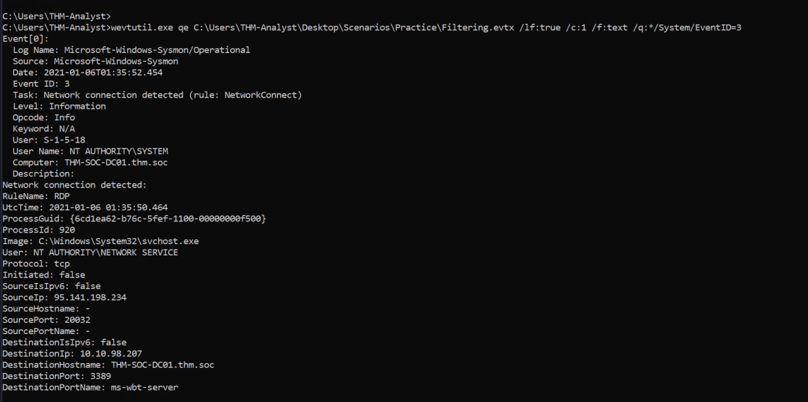